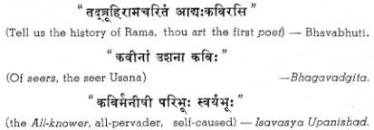

Some Thoughts on Similes
BY
RAJASEVAPRASAKTA N. RAMA RAO
“Simile
(Latin neutral of similis, like) is a
comparison of one thing with another, especially as an ornament in poetry or
rhetoric.” The comparison should be both true and beautiful, and what is more,
the juxtaposition must result in a revealing flash that illuminates both the
things compared. The statement of a mere resemblance, without truth, or beauty,
or illumination, is a banality. As Johnson said, a simile to be perfect must
both illustrate and ennoble the subject, and Addison declared that one of the
secrets of Milton’s sublimity was that he “never quits his simile till it rises
to some very great idea.”
Most
people, I believe, have moods in which they love to summon up remembrance of
things which have been a joy to them. Words and thoughts which have comforted
me in my journey are often with me as I spend a solitary evening in my
arm-chair, or go out for an early walk to take the morning air and revel in the
freedom of sun-lit spaces. At such times, similes that I have loved come back
to me, with a fresh wonder that is almost awe.
A
simile derives its beauty and illumination from the oneness of the Universe,
and is not only poetry but philosophy. It is a flash of revelation, and the
poet who sees and utters it, is a seer. It is, therefore, not by chance, nor
yet owing to penury of language that the Sanskrit word for poet means also seer
and the All-knower. As, witness:

A
simile is the expression of that essential unity of all things, which flashes
upon the inward eye which is the bliss of solitude, and which can get a
glimpse, be it never so evanescent, of reality.
How
beautiful, and yet how simple-and, once seen, how self-evident-are such similes
as:
“I
wandered lonely as a cloud.” –Wordsworth.
“Perhaps
losing hold of both (this world and the next) he is lost like a torn cloud in
the vastness of the Eternal” –Bhagavadgita.
Here
is the yearning of a life left from its setting, and all too aware of its
desolation. This sadness–all mutt have felt it at one time or another in
varying degrees of acuteness–what a background it is for the joy of fulfillment
when the lonely poet found himself caught up in the (gaiety of a jocund
company, when all at once he came upon a crowd of golden daffodils fluttering
and dancing in the breeze, tossing their heads in sprightly dance, outdoing in
glee the sparkling waves that danced beside them; and-in the other case-when
the soul. drifting like a lost wisp of vapour in space beheld the truth, and in
the rapture of realisation exclaimed:
“All
before is Brahma and Immortality–all behind–all above–all below–verily, All is Brahma.”
–(Mundaka Upanishad)
The
earliest literature, as we see it in the Vedic hymns, is figurative;
impressionist, as the earliest script is pictorial -and for the same reason.
The mind observes, but it has not come to analyse and make abstractions. Things
are still things, and have not become symbols. The most prevalent figure is
personification, and the most frequent approach, the apostrophe, There are
sometimes similes and metaphors (a metaphor is just an abbreviated simile) of
surpassing beauty, incandescent from the seers mind.
The
following extracts from the Hymn to Night in the Rigveda is an example:
Night
approaching looketh forth in many places with her eyes. She hath put on all her
glories.
The
immortal Goddess has pervaded the wide space, the depths and the heights.
So
hast thou come to us today and at thy coming, we do go home, as birds to their
nest on the tree.
Home
have gone the villagers, home all creatures, even the greedy hawks.
Ward
off the she-wolf and the wolf, ward off the thief, O Night; be thou happy for
us to pass.
The
Darkness, thick, painting black, palpable, has enveloped me; O Dawn, clear it
off like debts.
(R. V. X-127)
The
words of solemn Farewell to loved ones Hymn are strong with courage and hope:
“Go
forth, go forth by those ancient paths your fathers trod.”
The
Upanishads mark a further step in the development of the simile. The
resemblances are not only observed, but pursued in thought. The series of
beautiful similes in the Chhandogya whereby
the sage Aruni illustrates to Svetaketu the identity of the individual soul
with the Eternal–that thou art–are
perfect of their kind, and would lose by an abridged quotation. The invocation
of the dying sage in the Isavasya to
the Sun who “as with a golden cover hideth the face of Truth” beseeching him to
gather up and withdraw his dazzling rays, so that the sage’s dying eyes might
look unafraid on the absolute Truth, is difficult to match in literature. But
perhaps the simile most impressive of all in its sublimity is the following
from the Mundaka:
“Seize
then the mighty bow, the Upanishad; place on the string the arrow of thy Soul
sharpened by constant meditation, make the Brahman thy mark, and courageously
shoot thyself forth to reach thy mark.”
It
is no matter, for wonder that Shankaracharya’s mind, saturated as it was with
the Upanishads, imaged itself forth in similes of a grandeur hardly inferior:
“The
Asvattha is the tree of life–the
manifest world of living beings, changing from moment to moment, and vanishing
like an illusion, or the waters of a mirage or a cloud-city............... It
bears the sweet flowers love and charity, self-sacrifice and renunciation. In
it are the nests of myriad life, tumultuous with the many-toned voices of
pleasure and pain, love and dancing and laughter, and groans, wringing of hands
and loud lamentation. It is cut down by the axe of detachment.”
The
classical period was rich in poets of whom any age or clime might be
proud–Kalidasa Bhavabhuti, Bharavi, Bana, Magha, and others illustrious in
Indian Literature. Kalidasa, prince of poets, was universally acknowledged the
unrivalled master of simile.
The
similes in Kalidasa are invariably examples, taken at random, will illustrate:
“Parvati
and Parameswara, the parents of the Universe, inseparable as the word and its
meaning”
–Raghuvamsa.
“Saddening
yet beautiful is this love-lorn maid drooping like the madhavi creeper whose leaves have been oppressed by the summer
wind.”
–Shakuntala.
This
puts one in mind of Tennyson’s
“My
passion, sweeping through me left me dry” –only, it is incomparably better
poetry.
Perhaps
the most perfect simile in literature is in the description of Queen
Sudakshina, the expectant mother of Raghu. No translation can do justice to the
original–and here (with many apologies) is the nearest I could come to it in
English:
Her
jewels laid aside, till but a few
Sparkled
upon her drooping slenderness,
Her
face, set in her tresses, now the hue
Of
lodhra in its pallid tenderness,
Fair
as the fainting night at dawn of day
With
pale moon, in a thinly spangled sky
Was
the sweet queen, as glowing in her lay
The
rising sun of Manu’s lineage high.
The
best of translations are but shadows, and this is a poor one, containing at
least twice as many words as the original–words, too, which to the Sanskrit are as withered leaves to flowers bathed in
dew.
You
find in the original, set to the music of immortal verse, the pale moon of the
fading night, the hushed expectancy of a cold gray world yearning for sunrise,
on the one side; and on the other, the sweet young queen wan and faint with her
hero-burden, and the eager country waiting for the birth of a great king.
Only
a Shakespeare could render a Kalidasa adequately–but, then, a Shakespeare would
not need to render any body but himself to reach the very summit of human
language. The one simile that occurs to me as challenging a place with
Kalidasa’s is in Troilus and Cressida:
“We
two, that with so many thousand sighs
Did buy each other, must poorly sell
ourselves
With
the rude brevity and discharge of one.
Injurious
time, now with a robber’s haste
Crams
his rich thievery up, he knows not how;
As
many farewells as be stars In heaven,
With
distinct breath, and consigned kisses to them,
He
fumbles up into a loose adieu,
And
scants us with a single famished kiss,
Distasted
with the salt of broken tears”
I
wonder if the power of words could go any further -this is the very anguish of
a sudden parting such as presses the life from out young hearts,” darkens the
face of the sky, and makes a bleak promontory of the world. If Kalidasa’s
simile is the glory and travail of sunrise, Shakespeare’s is the agony of “a
huge eclipse of sun and moon.”
So
far I have spoken of similes on the large and elaborated scale. There is yet
another kind, small and dainty rather than grand, which is to the other as
jessamine to the lotus–and which is to be found in all true poetry, as for
example:
“With
thirsty eyes the queen drank her lord’s presence.” –Raghuvamsa.
“The
thirst that from the soul doth rise.” –Ben
Jonson.
“The
moon over the night her silver mantle threw.” –Milton
“Poor
withered leaf, where goest thou?”
“I
go where all things go
Where
goes the petal of the rose,
And
the leaf of the laurel” –Arnault.
Poetically,
the most beautiful use of such flowerets is their harmonious combination into a
colourful pattern of the poets fancy. Here is an exquisite example from Bhasa
(a description of winter):
“The
lord of the night is wan
like
a damsel parted from her beloved;
Feeble
now are the rays of the sun
like
the behests of fallen greatness;
Without,
the snow-laden wind is
cruel,
like the clasp of a pretended friend;
But
the fireside within, with its
smarting
smoke, is sweet like
the
young wife in her first love-quarrel.”
Here
are a number of images beautiful in themselves–the pale wintry moon, the wan
love-lorn maid waiting for her lover, the sun shorn of his erstwhile power, the
snow-laden winter-wind, sharp like benefits forgot, the young couple in their
first lovers’ difference, and the welcome warmth of the homely fire, with its
provocative tang of smoke.